Plaquettes EMBI
11 styles, mêmes textes et mêmes photos. 16 pages A4 paysage, à imprimer ou à enregistrer en PDF.
Dans l'esprit du site
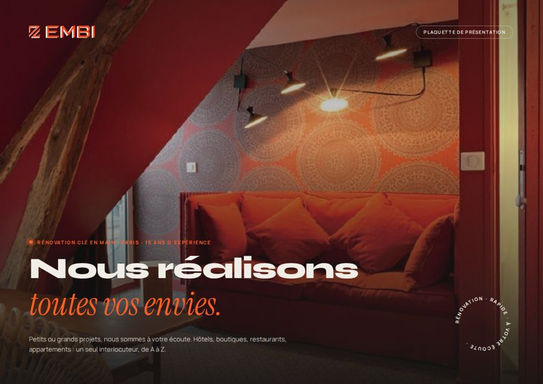
Site · Nuit
Le noir du site, Syne et Instrument Serif, orange chantier, photos arrondies et badge « rénovation · rapide · à votre écoute ».
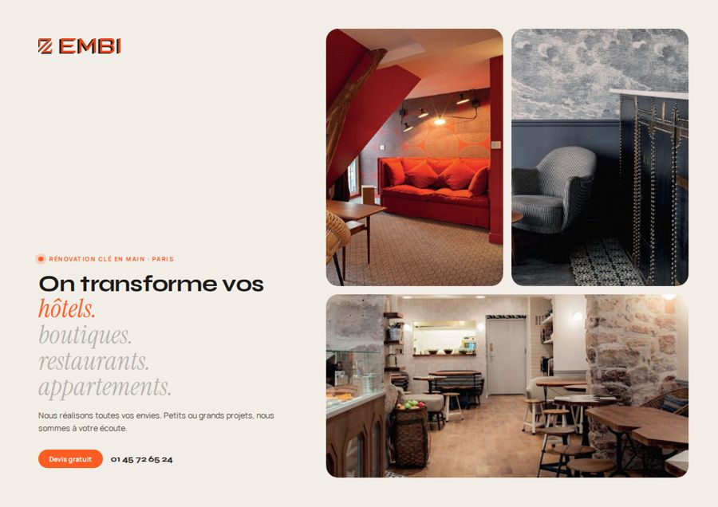
Site · Crème
Le crème du site, « On transforme vos hôtels. boutiques… », tampon « Clé en main » et étiquettes en pastilles.
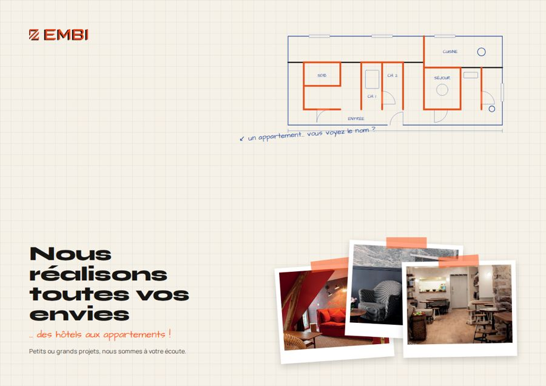
Site · Croquis
Carnet d'architecte : papier quadrillé, écriture à la main, photos scotchées et plan « embi » du site.
Styles déjà proposés
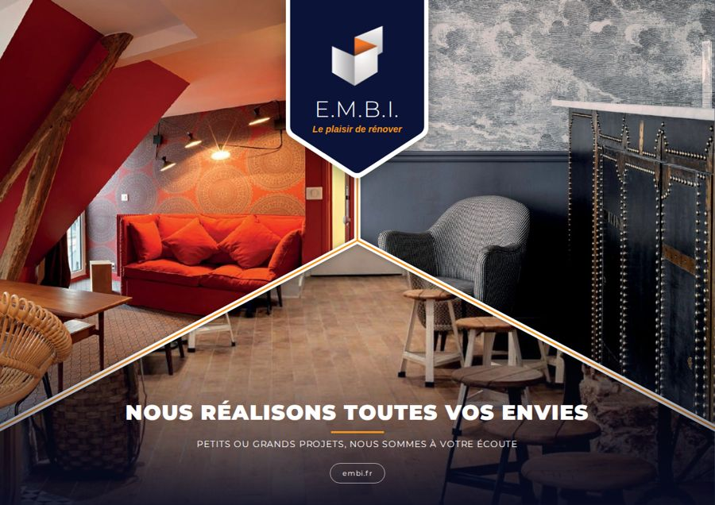
Ancienne pimpée
L'ancienne plaquette modernisée : bleu marine et orange, découpes en diagonale, écusson.
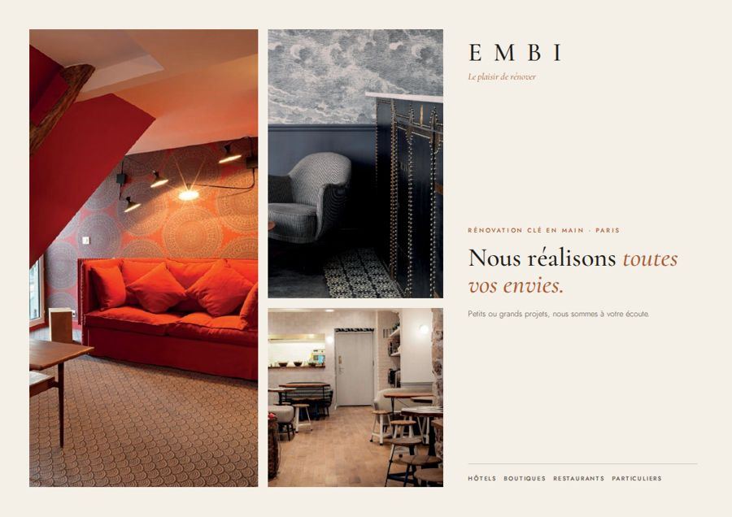
Éditorial
Magazine de luxe : crème, typographie à empattements, terracotta, beaucoup d'air.
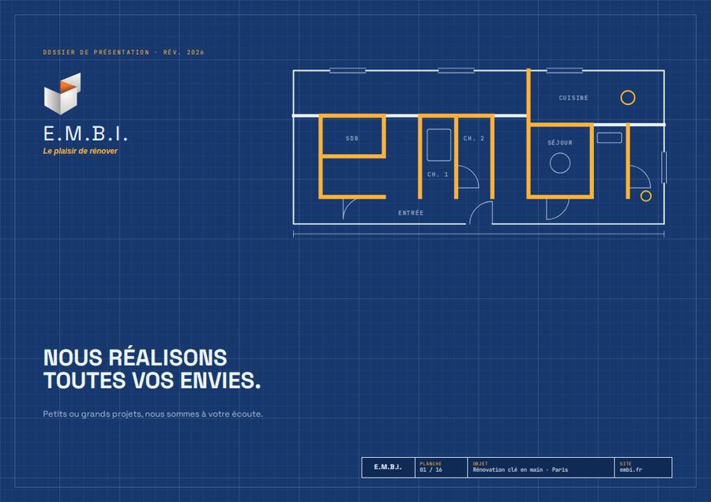
Architecte
Plan bleu quadrillé, cotes et cartouche d'architecte sur chaque planche.
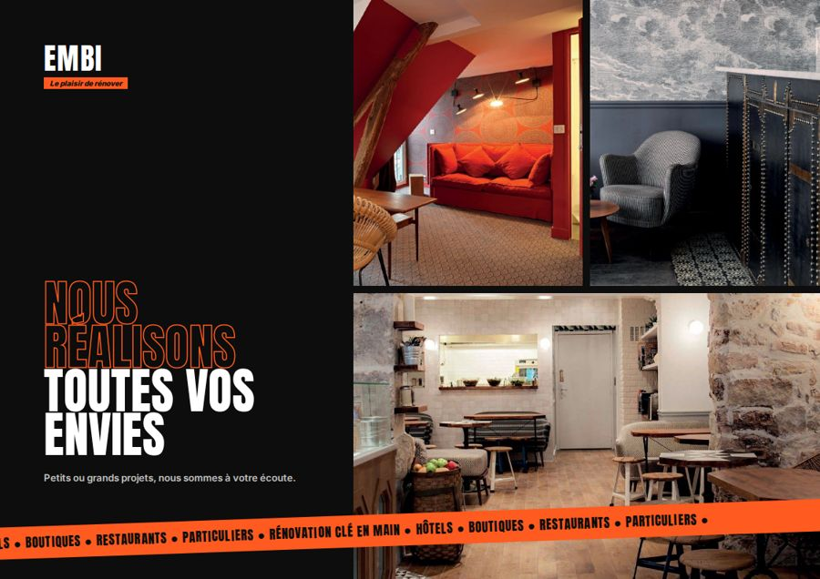
Bold
Noir, blanc et orange : grosse typographie, stickers, très contrasté.
Autres styles
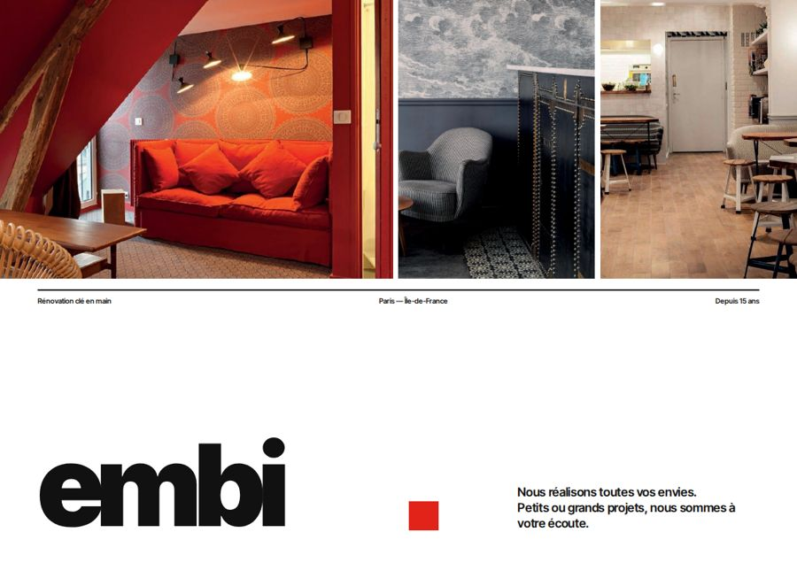
Suisse
Minimal et rigoureux : blanc, noir et rouge, grille stricte, grands numéros.
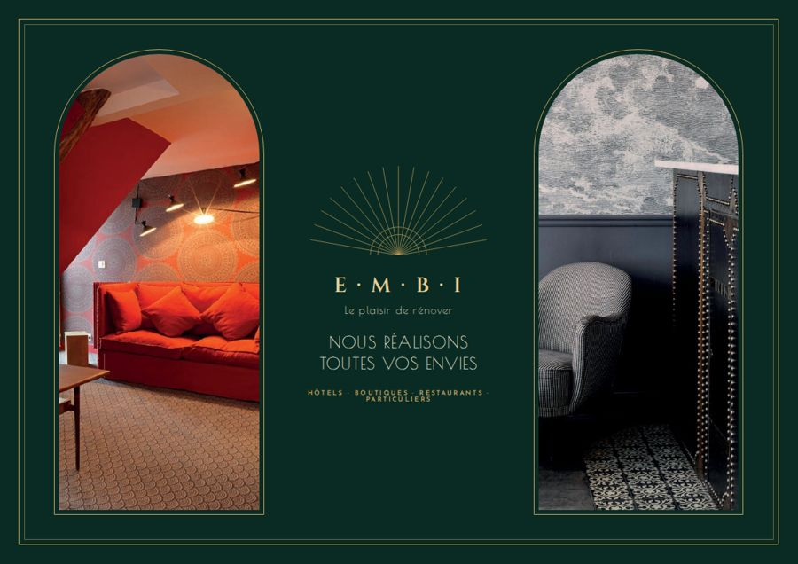
Art déco
Vert profond et or, photos en arches, cadres dorés et soleil rayonnant.
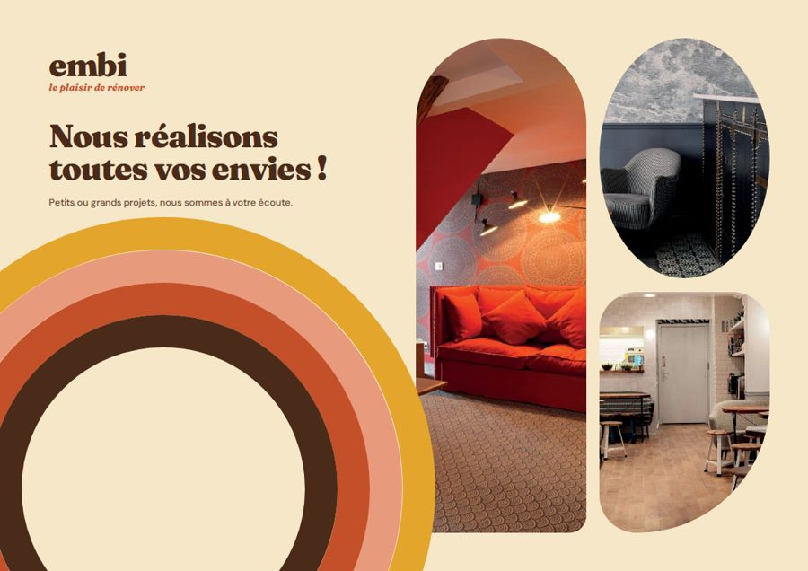
Rétro 70s
Moutarde, rouille et brun, arc-en-ciel, photos en arrondis et pastilles rondes.
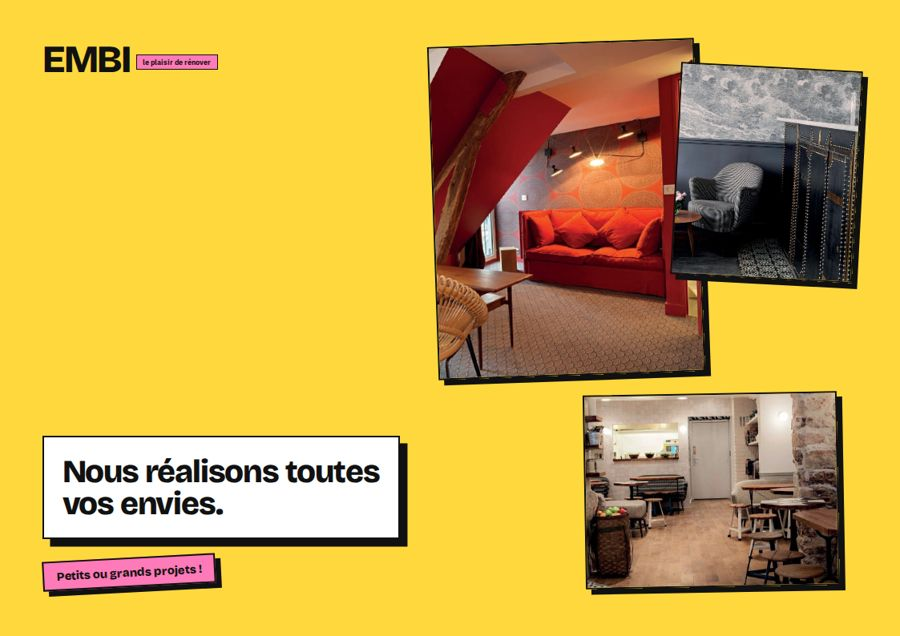
Néo-brutaliste
Jaune, bleu électrique et rose, bordures noires et ombres franches.